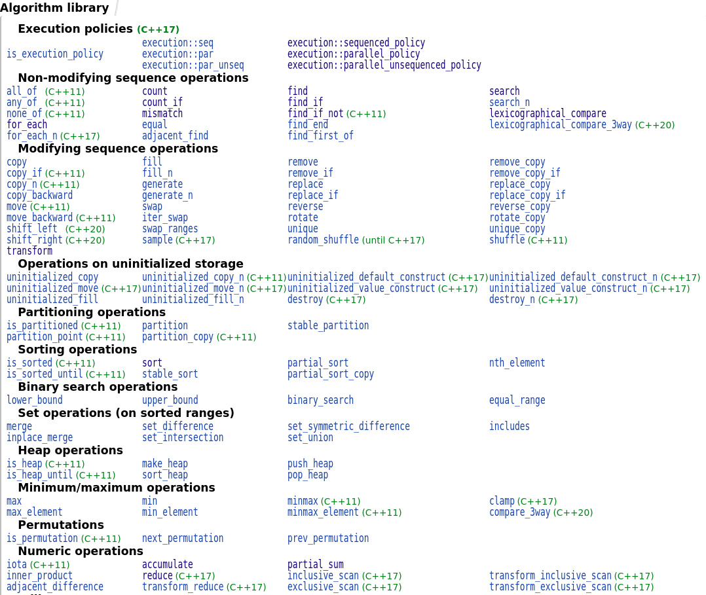

<!doctype html>
<html>
	<head>
		<meta charset="utf-8">
		<meta name="viewport" content="width=device-width, initial-scale=1.0, maximum-scale=1.0, user-scalable=no">

		<title>reveal.js</title>

		<link rel="stylesheet" href="css/reveal.css">
		<link rel="stylesheet" href="css/theme/black.css">

		<!-- Theme used for syntax highlighting of code -->
		<link rel="stylesheet" href="lib/css/zenburn.css">

		<!-- Printing and PDF exports -->
		<script>
			var link = document.createElement( 'link' );
			link.rel = 'stylesheet';
			link.type = 'text/css';
			link.href = window.location.search.match( /print-pdf/gi ) ? 'css/print/pdf.css' : 'css/print/paper.css';
			document.getElementsByTagName( 'head' )[0].appendChild( link );
		</script>
		<style type="text/css">
      .reveal p {
        text-align: left;
      }
      .reveal ul {
        display: block;
      }
      .reveal ol {
        display: block;
      }
      .reveal section img {
        background: none;
        border: none;
        box-shadow: none;
      }
    </style>
	</head>
	<body>
		<div class="reveal">
			<div class="slides">

<section data-markdown>
<script type="text/template">
## User-defined literals

As a every languages, C++ defines a lot of built-in literals:

```cpp
auto i = 32;   // int
auto s = 32s;  // short
auto d = 4.27; // double
auto b = true; // bool
```

But what about defining your own?

```cpp
auto distance = 42.5_km; // creates an object of type Dist
distance += 500_m;       // is now 43 km
auto speed = distance / 1_hour;
```
</script>
</section>

<section data-markdown>
<script type="text/template">
## User-defined literals

C++11 introduces the definition of custom literal operators:

```cpp
Dist operator "" _km(long double d) {
  return distFromKm(d);
}
```

Also used in the standard library, e.g. `chrono` or `complex`:

```cpp
using namespace std::chrono_literals;
using namespace std::complex_literals;

std::this_thread::sleep_for(250ms);

std::chrono::seconds hour_in_sec = 1h;
std::cout << hour_in_sec.count() << '\n';   // prints 3600

std::complex<double> c = 1.0 + 1i;
std::cout << abs(c) << '\n';                // prints 1.41421
```
</script>
</section>

<section data-markdown>
<script type="text/template">
## User-defined literals

  - Allow to easily define value-like types e.g. (type with unit, etc.)
    - types with units: distance, time, weight, ...
    - mathematical types: complex, vector
  - Improved type safety
    - define your type as classes and create them is easily as integers or doubles
  - Have types behaving exactly like built-in types
</script>
</section>

<section data-markdown>
<script type="text/template">
## Raw literals operator

Also possible to define *raw* literals
  - operator template enabling to perform checks on the actual characters given.

```cpp
template <char... str>
double operator "" _bin();

auto ten  = 1010_bin;  // equivalent as below
auto ten2 = operator "" _bin <'1', '0', '1', '0'>();

auto error = 1002_bin; // wouldn't compile because 2 is not binary!
```
  - more errors may be found at compile-time!

</script>
</section>


<section data-markdown>
<script type="text/template">
At Delta, we have to deal a lot with voltages, currents, etc.
  - Electrical measurements at the core of our system

```cpp
typedef int16_t Voltage;     // before...
class Voltage { /* ... */ }; // now complete type definition

Voltage v1 = 52.2_V;   // OK: 52.2 V (internally integer 5220)
Voltage v2 = 5220_cV;  // OK: same value expressed in centivolts
Voltage v3 = v2 + 5_V; // OK
Voltage err1 = 53;     // ERROR: no constructor Voltage(int)
Voltage err2 = v1 + 5; // ERROR
```
  - Migrating from `typedef` to a class with UDL found old bugs!
    - `Vdc != Vac`
  - Potentially enables to detect type mismatch at compile-time
    - `[A] * [V] => [W]`
</script>
</section>

<section data-markdown>
<script type="text/template">
## Optional

To express that there *may* be value returned.

Example:

```cpp
X parse_int(const std::string& s);
```

What type for `X`? Typical solutions:

  - ☹ use int with special value (`0`, `-1`, `MAX_INT`, ...)
  - ☹ use a pointer to int
  - ☹ return a separate error code / pass by reference
  - 😐 use exceptions?
</script>
</section>

<section data-markdown>
<script type="text/template">
## Optional

A type with a semantic of optional value:

```cpp
std::optional<int> parse_int(const std::string& s);

auto oi = parse_int("22");
if(oi)
  use(*oi);
std::cout << "value: " << oi.value_or("****") << '\n';
```

  - Clearly expresses the intent (function signature)
  - No need for dynamic allocation, separate flag or exceptions
  - Other *sum types* now standard: `variant`, `any`, ...
</script>
</section>

<section data-markdown>
<script type="text/template">
## Algorithms library

Collection of *generic* algorithms useful in day-to-day programming

  - are clearly named
  - avoid common mistakes with loops (off-by-one, special cases)
  - are well-tested and optimized
  - can be easily specialized (take predicates)

Not really new, but has now improved a lot with the newest features

  - lambdas
  - parallelism / vectorization (C++17)
  - really unleashed with *ranges* (C++20)
</script>
</section>

<section data-markdown>
<script type="text/template">
## Algorithms library

Example: count even elements in a sequence

```cpp
std::vector<int> nums = {7, 2, 8, 13, 21, 42};

int c = 0;
for(int i = 0; i < nums.size(); ++i)
{
  if(nums[i] % 2 == 0)
    ++c;
}
```

Using range-based for loop:

```cpp
int c = 0;
for(const auto& n : nums)
{
  if(n % 2 == 0)
    ++c;
}
```
</script>
</section>

<section data-markdown>
<script type="text/template">
## Algorithms library

Using a standard algorithm

```cpp
auto c = std::count_if(begin(nums), end(nums), [](auto n) {
  return n % 2 == 0; // predicate
});
```
  - No need for keeping the counter ourself
  - We can *filter* the value using any predicate
  - Similar algos: `find_if`, `copy_if`, `remove_if`, ...
  - Live example: https://godbolt.org/z/ff8Z7x
</script>
</section>

<section data-markdown>
<script type="text/template">

<center></center>
<small>Source: https://en.cppreference.com/w/cpp/algorithm</small>
</script>
</section>

<section data-markdown>
<script type="text/template">
## Algos: Execution Policies 

- Three different execution policies:
  - sequenced (`std::execution::seq`)
  - parallel (`std::execution::par`)
  - parallel unsequenced (`std::execution::par_unseq`)
    - enables vectorization
- Most algorithms can be parameterized with the new policies
- There are also new specific algos (reduce, scan, ...)
</script>
</section>

<section data-markdown>
<script type="text/template">
## Ranges

 - Problem with algorithms:
   - Always the need to manipulate iterators
   - Composition of algorithms: not easy
 - Going one step further: *ranges*
   - A range is something that as a *begin* and an *end*
   - E.g. all containers are themselves ranges
 - Concepts of *smart iteration* and *adaptors*
   - Enables to chain computations in shell-like piping style
</script>
</section>

<section data-markdown>
<script type="text/template">
## Ranges

- Example: get even elements in a sequence and double their values:

```cpp
std::vector<int> nums{/* ... */};
auto rng = nums | view::filter([](auto n) { return n % 2 == 0; })
                | view::transform([](auto n) { return 2 * n; });
```

- Sort and make and remove duplicates:

```cpp
nums |= action::sort | action::unique;
```

Views are *lazy*, actions are *eager*

<small>Live example: http://coliru.stacked-crooked.com/a/dd4e77376205a07e</small>
</script>
</section>

<section data-markdown>
<script type="text/template">

- There is **a lot** we didn't say
- Since 2011, C++ has become a whole new language
  - Paradigm shift: not OO or C-with-class!
  - Support for multiple paradigms:
    - data abstraction, generic programming, functional programming, OOP, ...
- Zero-cost abstraction
  - *You don’t pay for what you don’t use*
- Keep simple things simple
  - Not everybody needs to know the whole thing
  - If you *really* need to cut some abstraction, it still IS possible

</script>
</section>

<section data-markdown>
<script type="text/template">
## Thank You
</script>
</section>

<section data-markdown>
<script type="text/template">
## We're hiring!

<center></center>

- Want to work with Embedded Linux and modern C++?
- At Delta, we develop Telecom Power Solutions
- We're looking for some engineers:
  - Embedded Software and Hardware
  - Location: Bern-Bümpliz
- Reach me at the apero or <jeremy.singy@deltaww.com>
</script>
</section>

			</div>
		</div>

		<script src="lib/js/head.min.js"></script>
		<script src="js/reveal.js"></script>

		<script>
			// More info about config & dependencies:
			// - https://github.com/hakimel/reveal.js#configuration
			// - https://github.com/hakimel/reveal.js#dependencies
			Reveal.initialize({
				dependencies: [
					{ src: 'plugin/markdown/marked.js' },
					{ src: 'plugin/markdown/markdown.js' },
					{ src: 'plugin/notes/notes.js', async: true },
					{ src: 'plugin/highlight/highlight.js', async: true, callback: function() { hljs.initHighlightingOnLoad(); } }
				],
				history: true,
				transition: 'none',
			  width: 1200,
	      height: 700,
				margin: 0.05,
				minScale: 0.05,
				center: true,
				//width: '8 0%'
			});
		</script>
	</body>
</html>
